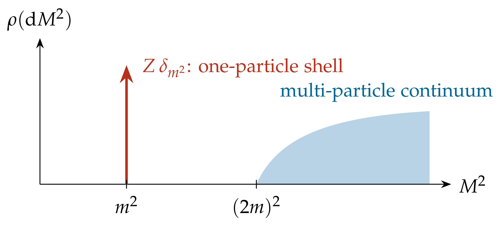
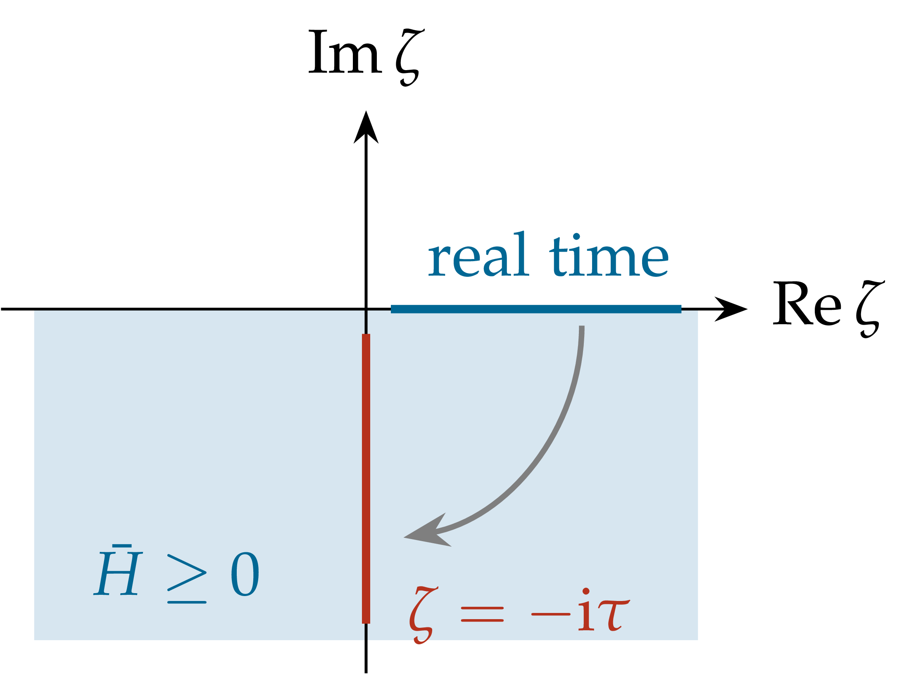
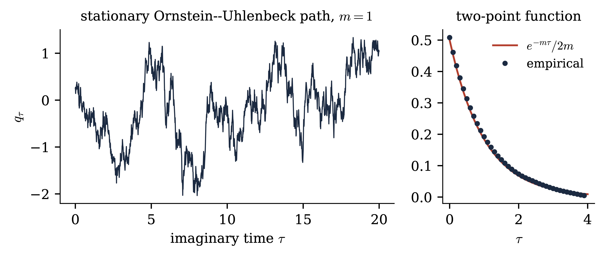

|
Abstract
We recall the Wightman axioms for a relativistic scalar field, explain why quantum fields must be operator-valued distributions, and discuss the Källén–Lehmann representation of the two-point function. Using a lattice regularisation of the quantum wave equation on a spatial circle we show how positivity of the energy allows the analytic continuation to imaginary time, leading to the Feynman–Kac (path integral) representation and to the identification of Euclidean field theories with continuum limits of short-range lattice spin systems at criticality. We conclude with the Osterwalder–Schrader axioms. Exercises are collected at the end of each section. These notes follow the slides of Lecture 1.
Introduction 2
Plan. 2
Conventions. 2
1Relativistic quantum fields in Minkowski space 2
1.1Kinematics 2
1.2The Wightman axioms 3
1.3Why operator-valued distributions? 5
The free field. 5
1.4The two-point function: the Källén–Lehmann representation 6
1.5The quantum wave equation 7
Free field on a spatial circle. 7
Interactions. 8
Exercises 8
2From real to imaginary time 9
2.1A lattice Hamiltonian on the circle 9
2.2Positivity of the energy and analytic continuation 9
2.3Discretising imaginary time: the Feynman–Kac formula 10
2.4Classical statistical mechanics 11
2.5Path integrals and the Osterwalder–Schrader axioms 13
The Euclidean strategy. 14
Exercises 14
3The course 15
Prerequisites. 15
Approach. 15
Lecture 1. Relativistic quantum fields and imaginary time 16
Lecture 2. The Gaussian free field 16
Lecture 3. Stochastic quantisation and stochastic observables 16
Lecture 4. The Polchinski flow and forward–backward equations 16
Lectures 5–7. 16
Homework and projects. 16
References and further reading 16
Guide. 16
Constructive quantum field theory aims at constructing, with full mathematical rigour, examples of interacting relativistic quantum fields, i.e. models satisfying a small set of axioms which encode quantum mechanics, special relativity and causality. In spacetime dimension \(d = 2\) and \(d = 3\) this programme has been carried out for several models (\(P (\varphi)_2\), Yukawa\(2\), \(\Phi^4_3\), sine-Gordon, …), while in \(d = 4\) no interacting model is known, and the scaling limits of critical lattice \(\varphi^4_4\) models are Gaussian (trivial) [ADC21].
The main lesson of the late 1960s and 1970s [Sym69, Nel73a, Nel73b, OS73, OS75, GRS75] is that it is much more efficient to work in imaginary time. The relativistic theory is then encoded in a probability measure on distributions on \(\mathbb{R}^d\), which looks like the continuum limit of a classical lattice spin system at a critical point. All modern approaches (cluster expansions, renormalisation group, stochastic quantisation, variational methods) work at this Euclidean level.
Minkowski space is \(\mathbb{R}^{1, s} \simeq \mathbb{R}^d\) with points \(x = (x^0, \textbf{x})\) and bilinear form \(x \cdot y = x^0 y^0 - \textbf{x} \cdot \textbf{y}\), \(x^2 = x \cdot x\). Two points are spacelike separated if \((x - y)^2 < 0\). The open forward light cone is \(V_{\hspace{-0.17em} +} = \{p : \hspace{0.17em} p^0 > | \textbf{p} |\}\), with closure \(\bar{V}_{\hspace{-0.17em} +}\). The restricted Lorentz group \(\mathcal{L}^{\uparrow}_+\) is the connected component of the identity of the group of linear maps preserving \(x \cdot y\); the restricted Poincaré group is \(\mathcal{P}^{\uparrow}_+ =\mathbb{R}^d \rtimes \mathcal{L}^{\uparrow}_+\), with \((a, \Lambda) (b, \Lambda') = (a + \Lambda b, \Lambda \Lambda')\), acting on spacetime by \(x \mapsto \Lambda x + a\).
By Wigner's theorem a relativistic quantum system carries a (projective) unitary representation of \(\mathcal{P}^{\uparrow}_+\) on its Hilbert space of states. For a scalar field we may assume a true representation.
Definition
A separable Hilbert space \(\mathcal{H}\) and a strongly continuous unitary representation \(U\) of \(\mathcal{P}^{\uparrow}_+\) on \(\mathcal{H}\). Write \(U (a, \mathbb{1}) = \mathrm{e}^{\mathrm{i} P \cdot a} = \mathrm{e}^{\mathrm{i} (P^0 a^0 - \textbf{P} \cdot \textbf{a})}\) for commuting self-adjoint generators \(P = (P^0, \textbf{P})\); \(H := P^0\) is the Hamiltonian.
Spectrum condition: the joint spectrum of \((P^0, \ldots, P^s)\) is contained in \(\bar{V}_{\hspace{-0.17em} +}\); in particular \(H \geq | \textbf{P} | \geq 0\).
Vacuum: there is a unit vector \(\Omega\), unique up to a phase among the translation invariant vectors, with \(U (a, \Lambda) \Omega = \Omega\) for all \((a, \Lambda) \in \mathcal{P}^{\uparrow}_+\).
There is a dense subspace \(\mathcal{D} \subset \mathcal{H}\) and, for every \(f \in \mathcal{S} (\mathbb{R}^d)\), an operator \(\varphi (f)\) with domain \(\mathcal{D}\) such that \(\Omega \in \mathcal{D}\), \(\varphi (f) \mathcal{D} \subset \mathcal{D}\), \(U (a, \Lambda) \mathcal{D} \subset \mathcal{D}\); for \(\chi, \psi \in \mathcal{D}\) the map \(f \mapsto \langle \chi, \varphi (f) \psi \rangle\) is a tempered distribution; and \(\langle \chi, \varphi (f) \psi \rangle = \langle \varphi (\bar{f}) \chi, \psi \rangle\).
\(U (a, \Lambda) \varphi (f) U (a, \Lambda)^{- 1} = \varphi (f_{(a, \Lambda)})\) on \(\mathcal{D}\), where \(f_{(a, \Lambda)} (x) = f (\Lambda^{- 1} (x - a))\).
If the supports of \(f\) and \(g\) are spacelike separated, then \([\varphi (f), \varphi (g)] \psi = 0\) for all \(\psi \in \mathcal{D}\).
The span of \(\{\varphi (f_1) \cdots \varphi (f_n) \Omega : \hspace{0.17em} n \geq 0, f_j \in \mathcal{S}(\mathbb{R}^d)\}\) is dense in \(\mathcal{H}\).
Formally \(\varphi (f) = \int \varphi (x) f (x) \hspace{0.17em} \mathrm{d} x\), and \(\varphi (x^0, \textbf{x}) = \mathrm{e}^{\mathrm{i} Hx^0} \varphi (0, \textbf{x}) \mathrm{e}^{- \mathrm{i} Hx^0}\) is the Heisenberg-picture field. For \(d \geq 3\), Lorentz invariance of the vacuum follows from translation invariance and uniqueness: \(U (0, \Lambda) \Omega\) is translation invariant, hence equal to \(\chi (\Lambda) \Omega\) for a character \(\chi\) of \(\mathcal{L}^{\uparrow}_+\), and \(\chi \equiv 1\) because \(\mathcal{L}^{\uparrow}_+\) has no nontrivial one-dimensional unitary representations. For \(d = 2\) the boosts form the abelian group \(\mathbb{R}\); there one may always replace \(U (a, \Lambda)\) by \(\chi (\Lambda)^{- 1} U (a, \Lambda)\), which is why we include Lorentz invariance in (W0). The Wightman functions
| \(\displaystyle W_n (f_1, \ldots, f_n) := \langle \Omega, \varphi (f_1) \cdots \varphi (f_n) \Omega \rangle\) | (1.1) |
extend, by the Schwartz kernel theorem, to tempered distributions \(W_n \in \mathcal{S}' (\mathbb{R}^{dn})\). They satisfy: (a) positivity: \(\sum_{j, k} W_{j + k} (g_j^{\ast} \otimes g_k) \geq 0\) for every finite sequence \(g_j \in \mathcal{S} (\mathbb{R}^{dj})\), with \(g^{\ast} (x_1, \ldots, x_j) = \overline{g (x_j, \ldots, x_1)}\); (b) Poincaré invariance; (c) spectral condition: \(W_n (x_1, \ldots, x_n) = w_n (x_1 - x_2, \ldots, x_{n - 1} - x_n)\) with \(\hat{w}_n\) supported in \(\bar{V}_{\hspace{-0.17em} +}^{\hspace{0.17em} n - 1}\) (for a suitable sign convention); (d) locality: \(W_n\) is unchanged under exchange of two adjacent spacelike separated arguments; (e) cluster property, equivalent to uniqueness of the vacuum (Remark 2.7).
Theorem
So constructing a QFT amounts to constructing its Wightman functions. For the axioms, the reconstruction theorem and the algebraic viewpoint see [SW64, BSZ92, Haa96]. The difficulty is that the positivity condition (a) is hard to verify for candidate Wightman functions: it involves all \(W_n\) at once, and the objects one can actually construct live in imaginary time, whereas (a) refers to their real-time boundary values. The Euclidean approach of Section 2 replaces it by reflection positivity, which can be checked on regularised (e.g. lattice) approximations and is preserved under the limits one has to take. Note also that the axioms say nothing about dynamics: there is no Lagrangian, and the interaction is hidden in the higher Wightman functions.
Remark
Remark
We nevertheless need fields, for three reasons. (a) The net refers to regions, not to points. Fields provide the pointlike localised quantities in which dynamics (field equations, Lagrangians), interactions (local products such as \(: \varphi^4\):) and the short-distance structure (operator product expansion, scaling dimensions) are expressed. (b) Correlation functions of fields are the concrete objects that constructive methods produce and estimate: the Euclidean measures of these lectures. (c) The two descriptions are close but not equivalent. The Wightman axioms alone do not guarantee a net of local algebras of bounded operators, and a net does not guarantee a Wightman field [Haa96, §III.1]. Under a phase-space condition, Fredenhagen and Hertel recover pointlike localised fields from a net by shrinking the regions to points [FH81]. In this course a QFT is constructed as a Euclidean measure for a field, and its local algebras are those generated by the reconstructed field.
Remark
where \(\sigma (x, y)\) is the squared geodesic distance, taken positive at spacelike separation (so that \(W_2 = 1 / (4 \pi^2 \sigma_{\varepsilon})\) for the massless field in Minkowski space), and \(\sigma_{\varepsilon} (x, y) = \sigma (x, y) + 2 \mathrm{i} \varepsilon (t (x) - t (y)) + \varepsilon^2\), \(\varepsilon \downarrow 0\), implements the positive-frequency \(\mathrm{i} \varepsilon\) prescription (\(t\) a time function), the coefficients \(U, V\) are determined by the metric and the field equation, and \(w\) is smooth and state dependent. By Radzikowski's theorem this is equivalent to a microlocal spectrum condition: the wave front set of \(W_2\) contains only positive frequencies [Rad96]. This is the local substitute for positivity of the energy. Hadamard states are the states in which Wick powers and the expectation of the stress–energy tensor can be renormalised, by subtracting the geometric part of \(W_2\) (point splitting). This is what semiclassical gravity and cosmology need [Wal94]; examples are the Bunch–Davies state of de Sitter space, used for inflationary perturbations, and the states of low energy on Friedmann–Robertson–Walker spacetimes (adiabatic states of finite order are, in general, only approximately Hadamard). In the language of these lectures, Remark 1.10(iii) and its Euclidean version (Remark 3.7) show that in flat space every theory is at least as singular as the free field. The Hadamard condition prescribes exactly the free singularity, and the Wick ordering of Lecture 2 is the flat-space version of the subtraction of the Hadamard parametrix.
For \(f \in \mathcal{S} (\mathbb{R}^d)\) one gets \(\varphi (f) \Omega = a^{\ast} (\tilde{f}) \Omega\) with \(\tilde{f} (\textbf{p}) = \int f (x) \mathrm{e}^{\mathrm{i} p \cdot x} \mathrm{d} x|_{p^0 = \omega (\textbf{p})}\), and
But formally \(\| \varphi (x) \Omega \|^2 = W_2 (0) = \int \mathrm{d} \Omega_m = + \infty\) for \(s \geq 1\): field fluctuations at a point are infinite. The divergence is ultraviolet (large momenta). It is logarithmic for \(s = 1\) and power-like for \(s \geq 2\). This is not an artefact of the free field.
Proposition
Lemma
Proof. A boost of rapidity \(\theta\) in the \(x^1\) direction acts as \(p^0 \pm p^1 \mapsto \mathrm{e}^{\pm \theta} (p^0 \pm p^1)\), leaving the other components unchanged. Let \(S^{\pm}_j = \{p \in \bar{V}_{\hspace{-0.17em} +} : \hspace{0.17em} 2^j \leq p^0 \pm p^1 < 2^{j + 1} \}\), \(j \in \mathbb{Z}\). The boost with \(\mathrm{e}^{\theta} = 2\) maps \(S^+_j\) onto \(S^+_{j + 1}\), so \(\mu (S^+_j)\) is independent of \(j\). These sets are disjoint and \(\mu\) is finite, so \(\mu (S^+_j) = 0\). The same argument applies to \(S^-_j\). Finally \(\bigcup_j (S^+_j \cup S^-_j) = \bar{V}_{\hspace{-0.17em} +} \setminus \{0\}\), since \(p^0 \pm p^1 \geq 0\) on \(\bar{V}_{\hspace{-0.17em} +}\) and \(p^0 + p^1 = p^0 - p^1 = 0\) forces \(p = 0\).\(\Box\)
Proof of Proposition 1.6. By covariance, \(U (0, \Lambda) \varphi (f) \Omega = \varphi (f_{(0, \Lambda)}) \Omega\). Since \(U (0, \Lambda) U (x, \mathbb{1}) = U (\Lambda x, \mathbb{1}) U (0, \Lambda)\), after the change of variables \(x \mapsto \Lambda x\) this reads
Letting \(f \to \delta_0\) gives \(U (0, \Lambda) \psi = \psi\). Let \(\mu\) be the spectral measure of \(\psi\) for the translations, \(\langle \psi, U (a, \mathbb{1}) \psi \rangle = \int \mathrm{e}^{\mathrm{i} p \cdot a} \mu (\mathrm{d} p)\). It is finite with mass \(\| \psi \|^2\), supported in \(\bar{V}_{\hspace{-0.17em} +}\) by the spectrum condition, and Lorentz invariant because \(\psi\) is. By Lemma 1.7, \(\langle \psi, U (a, \mathbb{1}) \psi \rangle = \| \psi \|^2\) for all \(a\), hence \(U (a, \mathbb{1}) \psi = \psi\) (equality in Cauchy–Schwarz), and \(\psi \in \mathbb{C} \Omega\) by uniqueness of the vacuum.\(\Box\)
Remark
The free two-point function
Theorem
| \(\displaystyle W_2 (x - y) = v^2 + \int_{[0, \infty)} \rho (\mathrm{d} M^2) \hspace{0.17em} W_2^{(M)} (x - y)\) | (1.4) |
in the sense of tempered distributions. The measure \(\rho\) grows at most polynomially and is such that the right-hand side is tempered; in particular \(\rho (\{0\}) = 0\) if \(d = 2\).
Sketch. Let \(\psi_f := \varphi (f) \Omega - v
(\int f) \Omega \perp \Omega\). By hermiticity \(\langle \psi_{\bar{f}},
\psi_g \rangle = W_2 (f \otimes g) - v^2 \int f \int
g\), and by
covariance \(U (a, \mathbb{1}) \psi_f = \psi_{f_{(a, \mathbb{1})}}\).
Hence the truncated function \(W_2^T := W_2 - v^2\) is a distribution of
positive type in \(x - y\). By the Bochner–Schwartz theorem
(equivalently, the spectral theorem for the translations restricted to
the closed span of the \(\psi_f\)) it is the Fourier transform of a
positive tempered measure \(\mu\) on momentum space. The spectrum
condition gives \(\text{supp} \mu \subset \bar{V}_{\hspace{-0.17em}
+}\). Since \(\psi_f \perp \Omega\) and \(\Omega\) is the only
translation invariant vector, \(\mu (\{0\}) = 0\). Covariance and \(U
(0, \Lambda) \Omega = \Omega\) make \(\mu\) invariant under
\(\mathcal{L}^{\uparrow}_+\). The \(\mathcal{L}^{\uparrow}_+\)-orbits in
\(\bar{V}_{\hspace{-0.17em} +} \setminus \{0\}\) are the hyperboloids
\(H^+_M\), \(M > 0\), and (for \(d \geq 3\)) the punctured boundary of
the cone, \(M = 0\). Each carries a unique invariant measure up to
normalisation, namely \(\mathrm{d} \Omega_M\). (For \(d = 2\) the two
half-lines \(p^0 = \pm p^1 > 0\) of the cone boundary are orbits too,
but their invariant measures \(\mathrm{d} p^{\pm} / p^{\pm}\) are not
locally finite at \(0\), so a tempered \(\mu\) cannot charge them; hence
\(\rho (\{0\}) = 0\).) Disintegrating \(\mu\) along \(M = (p^2)^{1 /
2}\) gives \(\mu = \int \rho (\mathrm{d} M^2) \hspace{0.17em}
\Omega_M\), which is
Remark
(ii) Particles. An atom \(Z \delta_{m^2}\) of \(\rho\) isolated from the rest of its support, \(Z > 0\), signals a particle of mass \(m\): an isolated eigenvalue \(m\) of the mass operator \((H^2 - \textbf{P}^2)^{1 / 2}\). The remaining part of \(\rho\) describes multi-particle states. In the absence of bound states it starts at \((2 m)^2\), or at \((3 m)^2\) if the theory is invariant under \(\varphi \mapsto - \varphi\). For weakly coupled \(P (\varphi)_2\) models the isolated one-particle shell was established in [GJS74].
(iii) No point fields, again. Formally \(W_2^T (0) = \int \rho (\mathrm{d} M^2) \int \mathrm{d} \Omega_M = \infty\) for any \(\rho \neq 0\) when \(d \geq 2\). The singularity at coincident points of a nontrivial Wightman field is at least as strong as that of the free field. Remark 3.7 gives a precise Euclidean version of this statement.
(iv) Canonical fields and field-strength renormalisation. If
the sharp-time fields exist and satisfy the CCR
 |
Figure 1.2. Typical spectral measure of an interacting field with mass gap (Theorem 1.9 and Remark 1.10): an isolated atom at the one-particle mass (\(0 < Z \leq 1\) for a canonical field), and a continuum starting at \((2 m)^2\), or at \((3 m)^2\) in the presence of the symmetry \(\varphi \mapsto - \varphi\). The free field has \(\rho = \delta_{m^2}\). |
Since \((- p^2 + m^2) \mathrm{e}^{\pm \mathrm{i} p \cdot x} = 0\) on the
mass shell, the free field
| \(\displaystyle (\Box + m^2) \varphi = 0, \qquad \Box = \partial_t^2 - \Delta_{\textbf{x}} .\) | (1.5) |
Moreover, the sharp-time fields \(\varphi (t, g) = \int \varphi (t, \textbf{x}) g (\textbf{x}) \mathrm{d} \textbf{x}\) and \(\pi (t, g)\), with \(\pi = \partial_t \varphi\), are well defined for \(g \in \mathcal{S} (\mathbb{R}^s)\) (Exercise 1.3), and satisfy the canonical commutation relations (CCR)
One may think of \(\varphi\) as the solution of a linear wave equation with quantum initial data: \((\varphi (0, \cdot), \pi (0, \cdot))\) satisfy the CCR and are “distributed” according to the vacuum.
The free field is an infinite collection of independent harmonic oscillators, one per mode. With an ultraviolet cutoff \(|k| \leq R\),
| \(\displaystyle \langle \Omega, \varphi_R (0, x)^2 \Omega \rangle = \sum_{|k| \leq R} \frac{1}{2 L \omega_k} = \frac{1}{2 \pi} \log \frac{R}{m} + O (1) \xrightarrow[]{R \to \infty} \infty .\) | (1.8) |
| \(\displaystyle (\Box + m^2) \varphi + \lambda \varphi^3 = 0,\) | (1.9) |
together with the CCR
\(\varphi (x)^3\) has no meaning, being the cube of a
distribution. It must be renormalised. In \(d = 2\) Wick
ordering \(: \varphi^3\): suffices (cf.
Haag's theorem [Haa96]: in infinite volume the interacting field at fixed time cannot be unitarily equivalent to the free one, so there is no interaction picture. The interacting theory lives in a representation of the CCR inequivalent to the Fock one.
Even in finite volume, \(H = H_0 + \lambda \int_{\mathbb{T}_L} : \varphi (0, x)^4 : \mathrm{d} x\) is the sum of a positive operator and an operator unbounded below. That it is bounded below was Nelson's breakthrough [Nel66], based on hypercontractivity. Its self-adjointness and the construction of the corresponding local Heisenberg dynamics, with finite propagation speed, are due to Glimm–Jaffe ([GJ68] and its sequels) and Segal [Seg70]; see [BSZ92] for a textbook account of this Hamiltonian approach. Removing the volume cutoff for \(\varphi^4_2\) was achieved by Glimm and Jaffe in a series of difficult papers; the full set of Wightman axioms for weakly coupled \(P (\varphi)_2\) models was established in [GJS74], already with Euclidean methods. For \(\Phi^4_3\) see [GJ73, FO76].
The Euclidean approach (Symanzik, Nelson, Osterwalder–Schrader, Guerra–Rosen–Simon) simplified this enormously. We now explain how it arises.
Exercise
Exercise
Exercise
Exercise
Exercise
Exercise
Exercise
We work with a regularised version of
Fix \(L > 0\), \(N \in \mathbb{N}\), \(\varepsilon = L / N\), and the periodic lattice \(\Lambda_{\varepsilon} = \varepsilon \mathbb{Z}/ L\mathbb{Z} \subset \mathbb{T}_L\) (\(N\) sites). Configurations are \(\varphi = (\varphi_x)_{x \in \Lambda_{\varepsilon}} \in \mathbb{R}^{\Lambda_{\varepsilon}}\). In the Schrödinger representation \(\mathcal{H}_{\varepsilon} = L^2 (\mathbb{R}^{\Lambda_{\varepsilon}}, \mathrm{d} \varphi)\), \(\varphi_x\) acts by multiplication and \(\pi_x := - \mathrm{i} \varepsilon^{- 1} \partial / \partial \varphi_x\), so that \([\varphi_x, \pi_y] = \mathrm{i} \varepsilon^{- 1} \mathbb{1}_{x = y}\), the lattice version of \(\mathrm{i} \delta (x - y)\). Let \(V\) be a polynomial bounded below (e.g.
\(V (u) = \lambda u^4\)) and
where \((\nabla_{\varepsilon} \varphi)_x = (\varphi_{x + \varepsilon} - \varphi_x) / \varepsilon\) and \(U_{\varepsilon} (\varphi) = \varepsilon \sum_x [\frac{1}{2} (\nabla_{\varepsilon} \varphi)_x^2 + \frac{1}{2} m^2 \varphi_x^2 + V (\varphi_x)]\). A short computation (Exercise 2.1) shows that the Heisenberg fields \(\varphi_x (t) = \mathrm{e}^{\mathrm{i} tH_{\varepsilon}} \varphi_x \mathrm{e}^{- \mathrm{i} tH_{\varepsilon}}\) satisfy
a lattice regularisation of the quantum wave equation
\(H_{\varepsilon}\) is a Schrödinger operator on \(\mathbb{R}^N\) with a confining potential (\(U_{\varepsilon} \geq c| \varphi |^2 - C\) since \(m > 0\)). Hence it is essentially self-adjoint on \(C^{\infty}_c\), bounded below, with compact resolvent, and \(\mathrm{e}^{- tH_{\varepsilon}}\) is trace class for \(t > 0\). The integral kernel of \(\mathrm{e}^{- tH_{\varepsilon}}\) is strictly positive, so by the Perron–Frobenius argument the ground state energy \(E_0 = \inf \text{spec} H_{\varepsilon}\) is a simple eigenvalue with a strictly positive eigenfunction \(\Omega_{\varepsilon}\), the lattice vacuum [Sim79]. We set
| \(\displaystyle \bar{H} := H_{\varepsilon} - E_0 \geq 0 \qquad (\text{positivity of the energy}) .\) | (2.3) |
Let \(F_1, \ldots, F_n : \mathbb{R}^{\Lambda_{\varepsilon}} \to \mathbb{C}\) be bounded measurable (acting as multiplication operators) and \(F_j (t) = \mathrm{e}^{\mathrm{i} tH_{\varepsilon}} F_j \mathrm{e}^{- \mathrm{i} tH_{\varepsilon}}\). Since \(\bar{H} \Omega_{\varepsilon} = 0\),
Proposition
and the Schwinger functions determine the Wightman functions \(W\).
Proof. By the spectral theorem, \(\mathrm{e}^{- \mathrm{i} \zeta \bar{H}} = \int \mathrm{e}^{- \mathrm{i} \zeta \lambda} \mathrm{d} E (\lambda)\) with \(| \mathrm{e}^{- \mathrm{i} \zeta \lambda} | = \mathrm{e}^{\lambda \text{Im} \zeta} \leq 1\) for \(\lambda \geq 0\), \(\text{Im} \zeta \leq 0\). It is therefore a contraction, strongly continuous on \(\bar{\mathbb{C}}_-\) and analytic in the interior. Products of such operators give separately analytic, bounded, continuous functions, hence jointly analytic ones. If \(\mathcal{W}\) vanishes on \((- \mathrm{i} \mathbb{R}_+)^{n - 1}\), the identity theorem in \(\zeta_1\) (with the other variables on the imaginary axis) shows that it vanishes for all \(\zeta_1 \in \mathbb{C}_-\). Proceeding variable by variable, and using continuity up to the boundary, gives \(W \equiv 0\).\(\Box\)
 |
Figure 2.1. Wick rotation (Proposition 2.1). Since \(\bar{H} \geq 0\), \(\mathrm{e}^{- \mathrm{i} \zeta \bar{H}}\) is a contraction on the lower half-plane \(\text{Im} \zeta \leq 0\), analytic in its interior. The Wightman functions on the real axis and the Schwinger functions on the negative imaginary axis are boundary values and restrictions of the same analytic function. |
Remark
The kinetic part of \(H_{\varepsilon}\) generates a Gaussian semigroup with kernel
Hence the symmetric Trotter approximant \(T_{\delta} := \mathrm{e}^{- \delta U_{\varepsilon} / 2} \hspace{0.17em} \mathrm{e}^{\frac{\delta}{2 \varepsilon} \Delta} \hspace{0.17em} \mathrm{e}^{- \delta U_{\varepsilon} / 2}\) has the explicit positive kernel
and \(T_{\delta}^{\lfloor \tau / \delta \rfloor} \to \mathrm{e}^{- \tau H_{\varepsilon}}\) strongly as \(\delta \to 0\) (Trotter product formula [RS80, Sim79]). Let \(T = J \delta\) and consider the space-time lattice
| \(\displaystyle \Lambda = \Lambda_{\delta, \varepsilon}^{T, L} := (\delta \mathbb{Z}/ T\mathbb{Z}) \times (\varepsilon \mathbb{Z}/ L\mathbb{Z}), \qquad \varphi = (\varphi_{\tau, x})_{(\tau, x) \in \Lambda}, \quad \varphi_{\tau} := (\varphi_{\tau, x})_{x \in \Lambda_{\varepsilon}} .\) | (2.7) |
Writing the trace of a product of integral operators as an integral over closed chains, we get \(\text{Tr} (T_{\delta}^J) = (2 \pi \delta / \varepsilon)^{- NJ / 2} \int_{\mathbb{R}^{\Lambda}} \mathrm{e}^{- S_{\delta, \varepsilon} (\varphi)} \prod_{u \in \Lambda} \mathrm{d} \varphi_u\) with the lattice Euclidean action
This discretises \(S (\varphi) = \iint_{\mathbb{T}_T \times \mathbb{T}_L} [\frac{1}{2} (\partial_{\tau} \varphi)^2 + \frac{1}{2} (\partial_x \varphi)^2 + \frac{1}{2} m^2 \varphi^2 + V (\varphi)] \hspace{0.17em} \mathrm{d} \tau \hspace{0.17em} \mathrm{d} x\). Imaginary time and space now play symmetric roles: the Minkowski metric has become Euclidean. Define the probability measure
| \(\displaystyle \mu_{\delta, \varepsilon}^{T, L} (\mathrm{d} \varphi) := Z^{- 1} \mathrm{e}^{- S_{\delta, \varepsilon} (\varphi)} \prod_{u \in \Lambda} \mathrm{d} \varphi_u .\) | (2.9) |
Inserting multiplication operators between the factors \(T_{\delta}\) gives, for \(\tau_1 \geq \ldots \geq \tau_n\) in \(\delta \mathbb{Z}\) with \(\tau_1 - \tau_n < T\),
where \(k_j = (\tau_j - \tau_{j + 1}) / \delta\) for \(j < n\) and \(k_n = J - \sum_{j < n} k_j\).
Proposition
Sketch. The Gaussian factor in
Vacuum expectations of the quantum system in imaginary time are thus moments of a classical probability measure. As \(T \to \infty\) the time-slices \((\varphi_{\tau})_{\tau \in \mathbb{R}}\) form a stationary Markov process: the ground-state transform of \(\mathrm{e}^{- \tau \bar{H}}\), whose one-time marginal is \(\Omega_{\varepsilon} (\varphi)^2 \mathrm{d} \varphi\). For \(N = 1\), \(V = 0\) this is the Ornstein–Uhlenbeck process (Exercise 2.2 and Figure 2.2).
 |
Figure 2.2. Left: a sample of the stationary Ornstein–Uhlenbeck process, the imaginary-time path of one harmonic oscillator, i.e. the GFF in \(d = 1\) (Exercise 2.2). Right: its empirical two-point function against the Schwinger function \(\mathrm{e}^{- m \tau} / 2 m\). |
Take the isotropic lattice \(\delta = \varepsilon\). Then
the first sum running over nearest-neighbour pairs of the two-dimensional periodic lattice \(\Lambda\). So \(\mu_{\varepsilon} \propto \prod_{\langle u, v \rangle} \mathrm{e}^{- \frac{1}{2} (\varphi_u - \varphi_v)^2} \prod_u \nu_{\varepsilon} (\mathrm{d} \varphi_u)\), with single-site measure \(\nu_{\varepsilon} (\mathrm{d} a) = \mathrm{e}^{- \varepsilon^2 (\frac{1}{2} m^2 a^2 + V (a))} \mathrm{d} a\). This is a ferromagnetic nearest-neighbour spin system with continuous, unbounded spins, i.e. a short-range model of classical statistical mechanics. In spacetime dimension \(d\) one gets \(\varepsilon^{d - 2} \sum_{\langle u, v \rangle}\) and \(\varepsilon^d \sum_u\) instead (Exercise 2.3). The nearest-neighbour structure makes \(\mu_{\varepsilon}\) reflection positive (Figure 2.3 and Exercise 2.5), the Euclidean shadow of the positivity of \(\mathrm{e}^{- \varepsilon H_{\varepsilon}}\). Conversely, reflection positivity is enough to reconstruct a Hilbert space and a positive Hamiltonian (Exercise 2.7).
|
||||||||||||||||||||||||
Remark
Remark
Formally, as \(\varepsilon \to 0\) and \(L, T \to \infty\),
Neither \(\mathcal{D} \varphi\) nor the action make sense, since typical \(\varphi\) are distributions. The Gaussian part, however, defines the Gaussian free field \(\mu_m\) of Section 3, and one is led to define \(\mu \propto \mathrm{e}^{- \int V (\varphi)} \mu_m\) with a renormalised \(V\), at least in finite volume in \(d = 2\). In \(d = 3\) this is possible only as the limit of ultraviolet-regularised measures of this form, and the limit is singular with respect to \(\mu_m\). Which measures on \(\mathcal{S}' (\mathbb{R}^d)\) correspond to relativistic QFTs? Let \(\hat{\mu} (f) := \int \mathrm{e}^{\mathrm{i} \varphi (f)} \mu (\mathrm{d} \varphi)\) be the characteristic functional and \(\Theta (\tau, \textbf{x}) = (- \tau, \textbf{x})\), \(\Theta f = f \circ \Theta\).
For real \(f_1, \ldots, f_n \in C^{\infty}_c (\mathbb{R}^d)\), the map \(z \mapsto \hat{\mu} (\sum_j z_j f_j)\) is entire on \(\mathbb{C}^n\).
For some \(p \in [1, 2]\) and \(c > 0\), \(| \hat{\mu} (f) | \leq \exp (c (\|f\|_{L^1} +\|f\|_{L^p}^p))\) for all complex-valued \(f \in C^{\infty}_c (\mathbb{R}^d)\), with \(\hat{\mu}\) extended by (OS0); if \(p = 2\), the two-point function is in addition required to be locally integrable.
\(\hat{\mu} (f \circ g) = \hat{\mu} (f)\) for every Euclidean motion \(g\) of \(\mathbb{R}^d\).
For real \(f_1, \ldots, f_n\) supported in \(\{\tau > 0\}\), the matrix \((\hat{\mu} (f_i - \Theta f_j))_{i, j}\) is positive semidefinite.
The time translations act ergodically on \((\mathcal{S}' (\mathbb{R}^d), \mu)\).
Theorem
Idea. Let \(\mathcal{E}_+\) be the functions of \(\varphi\) that depend only on its restriction to \(\{\tau > 0\}\), with \((F, G) := \mathbb{E}_{\mu} [\overline{\Theta F} \hspace{0.17em} G]\). By (OS3) this is a positive semi-definite form; quotienting by null vectors and completing gives \(\mathcal{H}\). Time translations by \(t \geq 0\) map \(\mathcal{E}_+\) to itself and descend to a self-adjoint contraction semigroup \(\mathrm{e}^{- tH}\), so \(H \geq 0\): positivity of the energy is recovered from reflection positivity. The vacuum is the class of \(1\), and the analytic continuation \(\tau \to \mathrm{i} t\) yields the Wightman functions.\(\Box\)
Remark
(i) Imaginary time: no averaging is needed. By the spectral theorem and dominated convergence, \(\mathrm{e}^{- tH} = \int_{[0, \infty)} \mathrm{e}^{- t \lambda} \mathrm{d} E (\lambda) \to E (\{0\}) = P_0\) strongly as \(t \to \infty\), because \(\mathrm{e}^{- t \lambda} \to \mathbb{1}_{\lambda = 0}\) for \(\lambda \geq 0\). In the reconstruction above, for \(F, G \in \mathcal{E}_+\) and \(\tau_t\) the time translation,
So the Euclidean correlations cluster, \(\mathbb{E}_{\mu} [\overline{\Theta F} \hspace{0.17em} \tau_t G] \to \overline{\mathbb{E}_{\mu} F} \hspace{0.17em} \mathbb{E}_{\mu} G\), iff \(P_0\) is the projection onto \(\mathbb{C} \Omega\), i.e. iff the vacuum is unique. With a mass gap the convergence is exponential, at rate \(\inf (\text{spec} H \setminus \{0\})\) (Exercise 2.6). Moreover, the spectrum condition \(H \geq | \textbf{P} |\) implies that a vector with \(H \psi = 0\) also has \(\textbf{P} \psi = 0\): invariance under time translations already gives invariance under all translations. For reflection positive measures, ergodicity (OS4) (by the reconstruction theorem) and clustering in imaginary time (by (i)) are both equivalent to uniqueness of the vacuum.
(ii) Real time: only averages converge. The unitary group \(\mathrm{e}^{- \mathrm{i} tH}\) does not converge as \(t \to \infty\) in general. Only its time averages do: \(\frac{1}{T} \int_0^T \mathrm{e}^{- \mathrm{i} tH} \mathrm{d} t \to P_0\) strongly (von Neumann's mean ergodic theorem). If \(H\) has an eigenvalue \(E > 0\) with eigenvector \(\psi\), then \(\langle \psi, \mathrm{e}^{- \mathrm{i} tH} \psi \rangle = \mathrm{e}^{- \mathrm{i} tE} \| \psi \|^2\) oscillates forever, while \(\langle \psi, \mathrm{e}^{- tH} \psi \rangle = \mathrm{e}^{- tE} \| \psi \|^2 \to 0\). This is the situation of the lattice systems of Section 2 in finite volume: their real-time correlations never decay, although the vacuum is unique and the Euclidean correlations cluster exponentially.
(iii) Relativistic theories. Here Lorentz covariance removes the eigenvalues. If \(U (a, \mathbb{1}) \psi = \mathrm{e}^{\mathrm{i} p \cdot a} \psi\) with \(p \neq 0\), then \(U (0, \Lambda) \psi\) is an eigenvector with eigenvalue \(\Lambda p\). The orbit of \(p\) is uncountable and eigenvectors for distinct eigenvalues are orthogonal, which contradicts the separability of \(\mathcal{H}\). So, if the vacuum is unique, the spectral measures of the translations on \(\Omega^{\perp}\) have no atoms, and by Wiener's theorem correlations cluster in mean:
Locality then upgrades this to the pointwise cluster property (e) in spacelike directions [SW64]. With a mass gap, the truncated functions decay faster than any power (Ruelle [Rue62]), and in fact exponentially (Araki, Hepp and Ruelle [AHR62]); see [Haa96, §II.4]. Conversely, if \(\ker H\) contains a unit vector \(\psi \perp \Omega\), then by cyclicity (W4) some product of fields has a nonzero component along \(\psi\), and the corresponding correlations do not factorise. In Euclidean terms the measure is then a mixture of several ergodic components, or phases, as for \(\varphi^4_2\) at strong coupling with its symmetric mixture of the two pure phases [GJS75].
Exercise
Exercise
Exercise
Exercise
(a) Show that \(\Gamma_{\varepsilon} (x) \to G_m (x)\) for \(x \neq 0\) (with \(x \in \varepsilon \mathbb{Z}^d\) along a sequence \(\varepsilon \to 0\), e.g. dyadic), where \(G_m\) is the Green function of \(m^2 - \Delta\) on \(\mathbb{R}^d\). (b) Show that in lattice units \(n = x / \varepsilon\) along a coordinate axis, \(\Gamma_{\varepsilon}\) decays like \(\mathrm{e}^{- \mu_{\varepsilon} |n|}\) with \(\cosh \mu_{\varepsilon} = 1 + \frac{1}{2} (\varepsilon m)^2\). Deduce that the lattice correlation length is \(\xi = \mu_{\varepsilon}^{- 1} \sim (\varepsilon m)^{- 1} \to \infty\) and interpret.
Exercise
Exercise
a mass gap gives exponential clustering of Schwinger functions.
Exercise
Exercise
These notes cover the first of seven two-hour lectures given at SISSA, Trieste, in October–November 2026, for graduate students in analysis, probability or mathematical physics. Each lecture has its own notes. Lectures 1–4 develop the general framework; Lectures 5–7 give a construction of \(\Phi^4_3\) on the torus via the FBSDE of Lecture 4. Lectures 1–3 were delivered in October 2026; Lectures 4–7 are provisional, and Lecture 7 will not be delivered in class.
|
|||||||||||||||
M. Aizenman, H. Duminil-Copin. Marginal triviality of the scaling limits of critical 4D Ising and \(\phi^4_4\) models. Ann. of Math. 194 (2021), 163–235.
S. Albeverio, F.C. De Vecchi, M. Gubinelli. Elliptic stochastic quantization. Ann. Probab. 48 (2020), 1693–1741.
H. Araki, K. Hepp, D. Ruelle. On the asymptotic behaviour of Wightman functions in space-like directions. Helv. Phys. Acta 35 (1962), 164–174.
R. Bauerschmidt, T. Bodineau, B. Dagallier. Stochastic dynamics and the Polchinski equation: an introduction. Probab. Surveys 21 (2024).
R. Bauerschmidt, D.C. Brydges, G. Slade. Introduction to a Renormalisation Group Method. Lecture Notes in Math. 2242, Springer, 2019.
I. Bailleul, I. Chevyrev, M. Gubinelli. Stochastic observables and Wilson–Itô diffusions. In preparation.
M. Boué, P. Dupuis. A variational representation for certain functionals of Brownian motion. Ann. Probab. 26 (1998), 1641–1659.
R. Brunetti, K. Fredenhagen, R. Verch. The generally covariant locality principle: a new paradigm for local quantum field theory. Comm. Math. Phys. 237 (2003), 31–68.
N. Barashkov, M. Gubinelli. A variational method for \(\Phi^4_3\). Duke Math. J. 169 (2020), 3339–3415.
D.C. Brydges. Lectures on the renormalisation group. In Statistical Mechanics, IAS/Park City Math. Ser. 16, Amer. Math. Soc., 2009, 7–93.
J.C. Baez, I.E. Segal, Z. Zhou. Introduction to Algebraic and Constructive Quantum Field Theory. Princeton Series in Physics, Princeton University Press, 1992.
G. Da Prato, J. Zabczyk. Stochastic Equations in Infinite Dimensions, 2nd ed. Cambridge University Press, 2014.
K. Fredenhagen, J. Hertel. Local algebras of observables and pointlike localized fields. Comm. Math. Phys. 80 (1981), 555–561.
J. Feldman, K. Osterwalder. The Wightman axioms and the mass gap for weakly coupled \((\Phi^4)_3\) quantum field theories. Ann. Physics 97 (1976), 80–135.
J. Glimm, A. Jaffe. A \(\lambda \varphi^4\) quantum field theory without cutoffs. I. Phys. Rev. 176 (1968), 1945–1951.
J. Glimm, A. Jaffe. Positivity of the \(\varphi^4_3\) Hamiltonian. Fortschr. Phys. 21 (1973), 327–376.
J. Glimm, A. Jaffe. Quantum Physics: A Functional Integral Point of View, 2nd ed. Springer, 1987.
J. Glimm, A. Jaffe, T. Spencer. The Wightman axioms and particle structure in the \(P (\varphi)_2\) quantum field model. Ann. of Math. 100 (1974), 585–632.
J. Glimm, A. Jaffe, T. Spencer. Phase transitions for \(\varphi^4_2\) quantum fields. Comm. Math. Phys. 45 (1975), 203–216.
F. Guerra, L. Rosen, B. Simon. The \(P (\varphi)_2\) Euclidean quantum field theory as classical statistical mechanics. I, II. Ann. of Math. 101 (1975), 111–189 and 191–259.
R.B. Griffiths, B. Simon. The \((\varphi^4)_2\) field theory as a classical Ising model. Comm. Math. Phys. 33 (1973), 145–164.
R. Haag, D. Kastler. An algebraic approach to quantum field theory. J. Math. Phys. 5 (1964), 848–861.
A. Jaffe. Constructive quantum field theory. In Mathematical Physics 2000, Imperial College Press, 2000, 111–127.
S. Janson. Gaussian Hilbert Spaces. Cambridge University Press, 1997.
G. Källén. On the definition of the renormalization constants in quantum electrodynamics. Helv. Phys. Acta 25 (1952), 417.
A. Klein, L.J. Landau, J.F. Perez. Supersymmetry and the Parisi–Sourlas dimensional reduction: a rigorous proof. Comm. Math. Phys. 94 (1984), 459–482.
H. Lehmann. Über Eigenschaften von Ausbreitungsfunktionen und Renormierungskonstanten quantisierter Felder. Nuovo Cimento 11 (1954), 342–357.
E. Nelson. A quartic interaction in two dimensions. In Mathematical Theory of Elementary Particles, MIT Press, 1966, 69–73.
E. Nelson. The free Markoff field. J. Funct. Anal. 12 (1973), 211–227.
E. Nelson. Construction of quantum fields from Markoff fields. J. Funct. Anal. 12 (1973), 97–112.
K. Osterwalder, R. Schrader. Axioms for Euclidean Green's functions. Comm. Math. Phys. 31 (1973), 83–112.
K. Osterwalder, R. Schrader. Axioms for Euclidean Green's functions II. Comm. Math. Phys. 42 (1975), 281–305.
J. Polchinski. Renormalization and effective Lagrangians. Nuclear Phys. B 231 (1984), 269–295.
M.J. Radzikowski. Micro-local approach to the Hadamard condition in quantum field theory on curved space-time. Comm. Math. Phys. 179 (1996), 529–553.
M. Reed, B. Simon. Methods of Modern Mathematical Physics II: Fourier Analysis, Self-Adjointness. Academic Press, 1975.
M. Reed, B. Simon. Methods of Modern Mathematical Physics I: Functional Analysis, rev. ed. Academic Press, 1980.
D. Ruelle. On the asymptotic condition in quantum field theory. Helv. Phys. Acta 35 (1962), 147–163.
I.E. Segal. Construction of non-linear local quantum processes: I. Ann. of Math. 92 (1970), 462–481.
S. Sheffield. Gaussian free fields for mathematicians. Probab. Theory Related Fields 139 (2007), 521–541.
B. Simon. The \(P (\varphi)_2\) Euclidean (Quantum) Field Theory. Princeton University Press, 1974.
B. Simon. Functional Integration and Quantum Physics. Academic Press, 1979; 2nd ed., AMS Chelsea, 2005.
S.J. Summers. A perspective on constructive quantum field theory. Preprint, arXiv:1203.3991.
R.F. Streater, A.S. Wightman. PCT, Spin and Statistics, and All That. Benjamin, 1964; Princeton Landmarks in Physics, 2000.
K. Symanzik. Euclidean quantum field theory. In Local Quantum Theory (R. Jost, ed.), Proc. Int. School of Physics “Enrico Fermi” 45, Academic Press, 1969.
R.M. Wald. Quantum Field Theory in Curved Spacetime and Black Hole Thermodynamics. University of Chicago Press, 1994.
A.S. Wightman. La théorie quantique locale et la théorie quantique des champs. Ann. Inst. H. Poincaré Sect. A 1 (1964), 403–420.
K.G. Wilson, J. Kogut. The renormalization group and the \(\epsilon\) expansion. Phys. Rep. 12 (1974), 75–199.